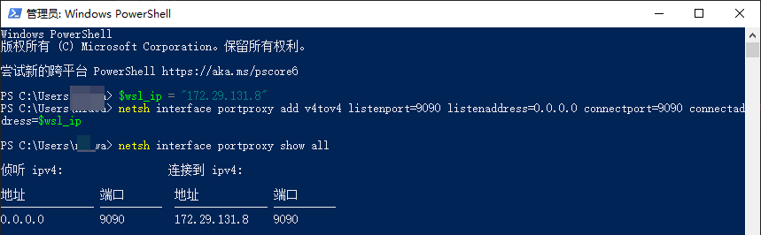

局域网访问wsl上的服务
局域网访问 wsl 上的服务
背景
在 windows 的子系统（ubuntu）中启动了一个服务，但是在 windows 上可以使用 localhost 进行访问，但是没办法通过 windows 的 ip 进行访问，
例如：
windows 的 ip 为：172.19.2.xxx
wsl 上的 ip 为：172.29.131.8
在 wsl 上启动的服务端口为：9090 我在 windows 上使用 172.19.2.xxx:9090 无法访问，
但是可以使用：http://localhost:9090/ 和 http://172.29.131.8/ 进行访问，
在局域网的其他电脑不能使用 http://172.29.131.8/ 进行访问，也不能使用 http://172.19.2.xxx:9090 访问
如果我是在 windows 上启动这个服务，就可以使用 http://172.19.2.xxx:9090 访问，并且局域网也能使用 http://172.19.2.xxx:9090 访问
需求
如何在宿主机 window 上或局域网其他电脑，使用 http://172.19.2.xxx:9090 访问我 wsl 上启动的服务
解决办法
为了在宿主机 Windows 或局域网其他电脑通过 http://172.19.2.xxx:9090 访问 WSL 中的服务，需解决 WSL2 网络隔离和防火墙规则问题。以下是具体步骤：
1. 确保服务绑定到 0.0.0.0
在 WSL 的 Ubuntu 中，确认服务监听的地址是 0.0.0.0（所有接口），而非 127.0.0.1（仅本地）。
检查命令（以 Python 服务为例）：
1 | netstat -tuln | grep 9090 |
若输出显示 0.0.0.0:9090 或 :::9090（IPv6），则已正确绑定。否则需调整服务配置。
2. 配置 Windows 防火墙允许入站
允许外部访问 Windows 的 9090 端口：
- 打开 Windows Defender 防火墙 → 高级设置 → 入站规则 → 新建规则。
- 选择 端口 → TCP → 特定端口
9090→ 允许连接 → 应用所有网络类型。 - 命名规则（如
WSL 9090）并完成。
3. 设置端口转发（关键步骤）
由于 WSL2 使用虚拟网络，需将 Windows 的端口流量转发到 WSL：
以管理员身份运行 PowerShell，执行以下命令：
1 | 添加端口转发规则（替换为你的WSL IP）_ |
说明：
listenaddress=0.0.0.0允许所有外部 IP 访问。- 如果 WSL IP 重启后变化，需更新转发规则（见下文 自动化脚本）。

4. 允许 Hyper-V 虚拟交换机通过防火墙（可选）
如果仍无法访问，可能需要允许 Hyper-V 虚拟交换机的防火墙规则：
- 打开 控制面板 → 系统和安全 → Windows Defender 防火墙 → 允许应用通过防火墙。
- 找到 Hyper-V Management 并勾选 专用 和 公用。
5. 测试访问
- 宿主机 Windows：访问 http://172.19.2.xxx:9090
- 局域网设备：使用
http://[Windows主机的IP]:9090访问。
自动化脚本（应对 WSL IP 变化）
创建 PowerShell 脚本 wsl_port_forward.ps1，内容如下：
1 | 获取WSL2的IP地址_ |
每次 WSL 重启后以管理员身份运行此脚本。
总结
- 服务绑定：确保服务监听
0.0.0.0:9090。 - 防火墙：允许 Windows 的 9090 端口入站。
- 端口转发：使用
netsh将 Windows 端口转发到 WSL。 - IP 变化处理：通过脚本动态更新转发规则。
完成以上步骤后，局域网设备即可通过 http://172.19.2.xxx:9090 访问 WSL 服务。